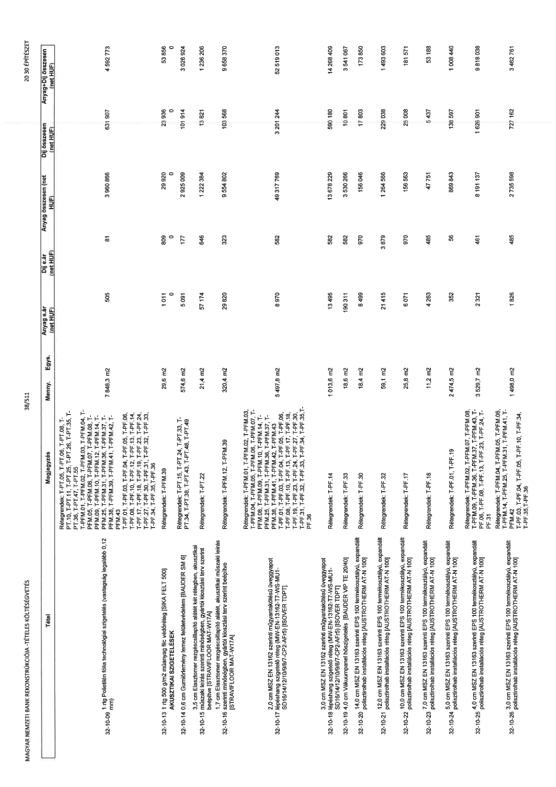

| Tétel | Megjegyzés | Menny. | Egys. | Anyag e.ár (net HUF) | Díj e.ár (net HUF) | Anyag összesen (net HUF) | Díj összesen (net HUF) | Anyag+Díj összesen (net HUF) |
|---|---|---|---|---|---|---|---|---|
| 32-10-09 1 rtg Polietilén fólia technológiai szigetelés (vastagság legalább 0,12 mm) | Rétegrendek: T-PT.05, T-PT.06, T-PT.08, T-PT.10, T-PT.11, T-PT.25, T-PT.26, T-PT.35, T-PT.36, T-PT.47, T-PT.55 T-PFM.01, T-PFM.02, T-PFM.03, T-PFM.04, T-PFM.05, T-PFM.06, T-PFM.07, T-PFM.08, T-PFM.09, T-PFM.10, T-PFM.12, T-PFM.14, T-PFM.25, T-PFM.31, T-PFM.36, T-PFM.37, T-PFM.38, T-PFM.39, T-PFM.41, T-PFM.42, T-PFM.43 T-PF.01, T-PF.03, T-PF.04, T-PF.05, T-PF.06, T-PF.08, T-PF.10, T-PF.12, T-PF.13, T-PF.14, T-PF.17, T-PF.18, T-PF.19, T-PF.23, T-PF.24, T-PF.27, T-PF.30, T-PF.31, T-PF.32, T-PF.33, T-PF.34, T-PF.35, T-PF.36 | 7 848,3 | m2 | 505 | 81 | 3 960 866 | 631 907 | 4 592 773 |
| 32-10-13 1 rtg 500 g/m2 műanyag filc védőréteg [SIKA FELT 500] | Rétegrendek: T-PFM.39 | 29,6 | m2 | 1 011 | 809 | 29 920 | 23 936 | 53 856 |
| AKUSZTIKAI SZIGETELÉSEK | NaN | NaN | NaN | 0 | 0 | 0 | 0 | 0 |
| 32-10-14 0,6 cm Gumiőrlemény lemez felületvédelem [BAUDER SM 6] | Rétegrendek: T-PT.15, T-PT.24, T-PT.33, T-PT.34, T-PT.38, T-PT.43, T-PT.48, T-PT.49 | 574,6 | m2 | 5 091 | 177 | 2 925 009 | 101 914 | 3 026 924 |
| 32-10-15 3,5 cm Elasztomer rezgéscsillapító alátét két rétegben, akusztikai műszaki leírás szerinti minőségben, gyártói kiosztási terv szerint beépítve [STRAVIFLOOR MAT-W17A] | Rétegrendek: T-PT.22 | 21,4 | m2 | 57 174 | 646 | 1 222 384 | 13 821 | 1 236 206 |
| 32-10-16 1,7 cm Elasztomer rezgéscsillapító alátét, akusztikai műszaki leírás szerinti minőségben, gyártói kiosztási terv szerint beépítve [STRAVIFLOOR MAT-W17A] | Rétegrendek: T-PFM.12, T-PFM.39 | 320,4 | m2 | 29 820 | 323 | 9 554 802 | 103 568 | 9 658 370 |
| 32-10-17 2,0 cm MSZ EN 13162 szerinti műgyantakötésű üveggyapot lépéshang szigetelő réteg (MW-EN-13162-T7-WS-MU1-SD16/14/12/10/9/8/7-CP2-AFi5) [ISOVER TDPT] | Rétegrendek: T-PFM.01, T-PFM.02, T-PFM.03, T-PFM.04, T-PFM.05, T-PFM.06, T-PFM.07, T-PFM.25, T-PFM.31, T-PFM.36, T-PFM.37, T-PFM.38, T-PFM.41, T-PFM.42, T-PFM.43 T-PF.01, T-PF.03, T-PF.04, T-PF.05, T-PF.06, T-PF.08, T-PF.10, T-PF.13, T-PF.17, T-PF.18, T-PF.19, T-PF.23, T-PF.24, T-PF.27, T-PF.30, T-PF.31, T-PF.32, T-PF.33, T-PF.34, T-PF.35, T-PF.36 | 5 497,8 | m2 | 8 970 | 582 | 49 317 769 | 3 201 244 | 52 519 013 |
| 32-10-18 3,0 cm MSZ EN 13162 szerinti műgyantakötésű üveggyapot lépéshang szigetelő réteg (MW-EN-13162-T7-WS-MU1-SD16/14/12/10/9/8/7-CP2-AFi5) [ISOVER TDPT] | Rétegrendek: T-PF.14 | 1 013,6 | m2 | 13 495 | 582 | 13 678 229 | 590 180 | 14 268 409 |
| 32-10-19 4,0 cm Vákuumpanel hőszigetelés [BAUDER VIP TE 20/40] | Rétegrendek: T-PF.33 | 18,6 | m2 | 190 311 | 582 | 3 530 266 | 10 801 | 3 541 067 |
| 32-10-20 14,0 cm MSZ EN 13163 szerinti EPS 100 termékosztályú, expandált polisztirolhab installációs réteg [AUSTROTHERM AT-N 100] | Rétegrendek: T-PF.30 | 18,4 | m2 | 8 499 | 970 | 156 046 | 17 803 | 173 850 |
| 32-10-21 12,0 cm MSZ EN 13163 szerinti EPS 100 termékosztályú, expandált polisztirolhab installációs réteg [AUSTROTHERM AT-N 100] | Rétegrendek: T-PF.32 | 59,1 | m2 | 21 415 | 3 879 | 1 264 566 | 229 038 | 1 493 603 |
| 32-10-22 10,0 cm MSZ EN 13163 szerinti EPS 100 termékosztályú, expandált polisztirolhab installációs réteg [AUSTROTHERM AT-N 100] | Rétegrendek: T-PF.17 | 25,8 | m2 | 6 071 | 970 | 156 563 | 25 008 | 181 571 |
| 32-10-23 7,0 cm MSZ EN 13163 szerinti EPS 100 termékosztályú, expandált polisztirolhab installációs réteg [AUSTROTHERM AT-N 100] | Rétegrendek: T-PF.18 | 11,2 | m2 | 4 263 | 485 | 47 751 | 5 437 | 53 188 |
| 32-10-24 5,0 cm MSZ EN 13163 szerinti EPS 100 termékosztályú, expandált polisztirolhab installációs réteg [AUSTROTHERM AT-N 100] | Rétegrendek: T-PF.01, T-PF.19 | 2 474,5 | m2 | 352 | 56 | 869 843 | 138 597 | 1 008 440 |
| 32-10-25 4,0 cm MSZ EN 13163 szerinti EPS 100 termékosztályú, expandált polisztirolhab installációs réteg [AUSTROTHERM AT-N 100] | Rétegrendek: T-PFM.02, T-PFM.07, T-PFM.08, T-PFM.09, T-PFM.36, T-PFM.37, T-PFM.43, T-PF.06, T-PF.08, T-PF.13, T-PF.23, T-PF.24, T-PF.31 | 3 529,7 | m2 | 2 321 | 461 | 8 191 137 | 1 626 901 | 9 818 038 |
| 32-10-26 3,0 cm MSZ EN 13163 szerinti EPS 100 termékosztályú, expandált polisztirolhab installációs réteg [AUSTROTHERM AT-N 100] | Rétegrendek: T-PFM.04, T-PFM.05, T-PFM.06, T-PFM.14, T-PFM.25, T-PFM.31, T-PFM.41, T-PFM.42 T-PF.03, T-PF.04, T-PF.05, T-PF.10, T-PF.34, T-PF.35, T-PF.36 | 1 498,0 | m2 | 1 826 | 485 | 2 735 598 | 727 162 | 3 462 761 |
